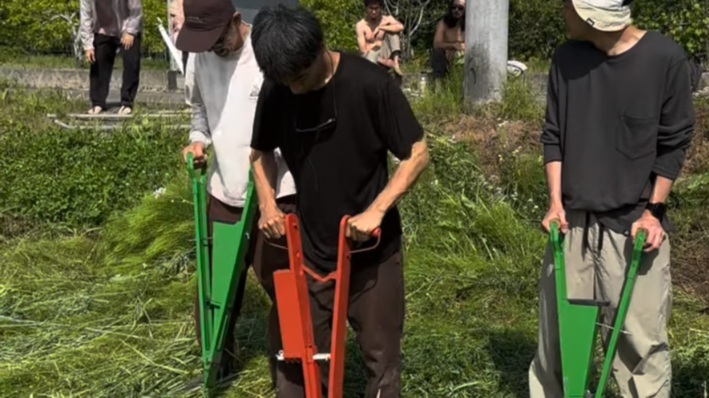
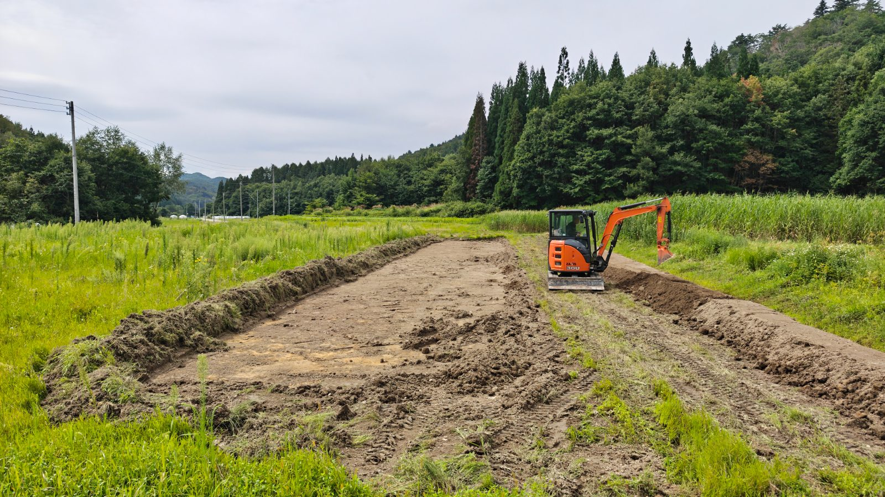
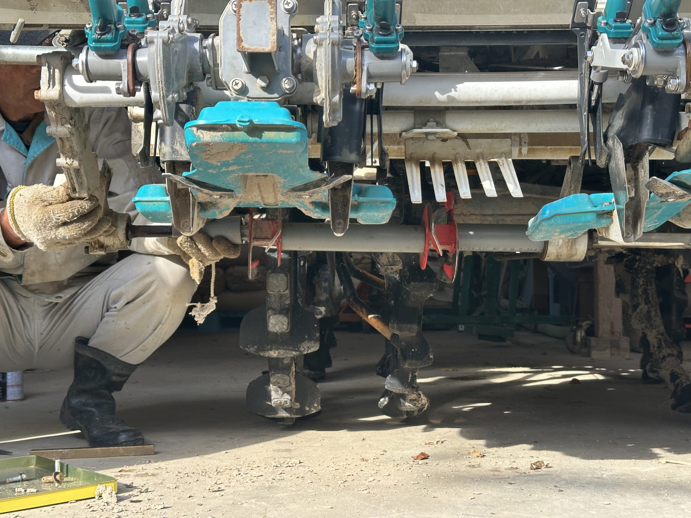
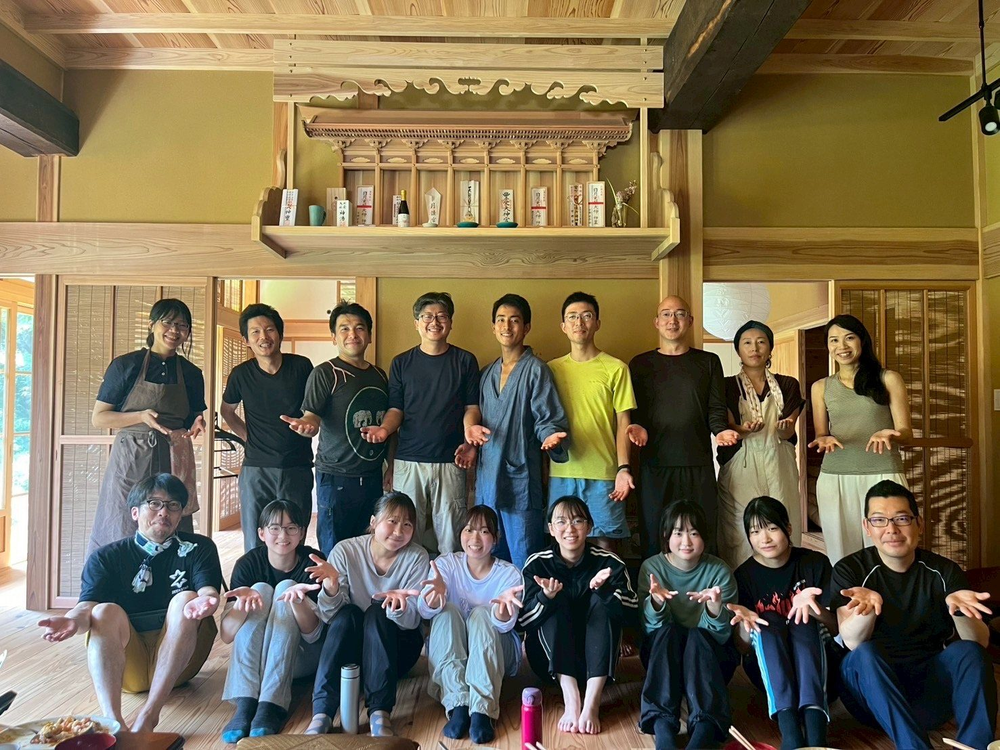
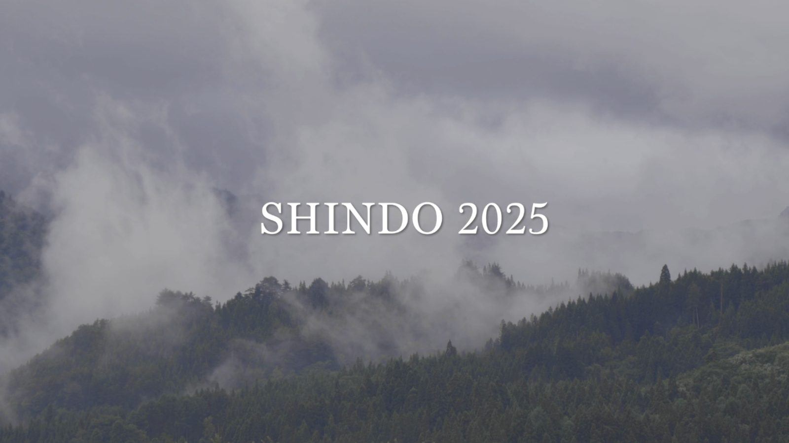
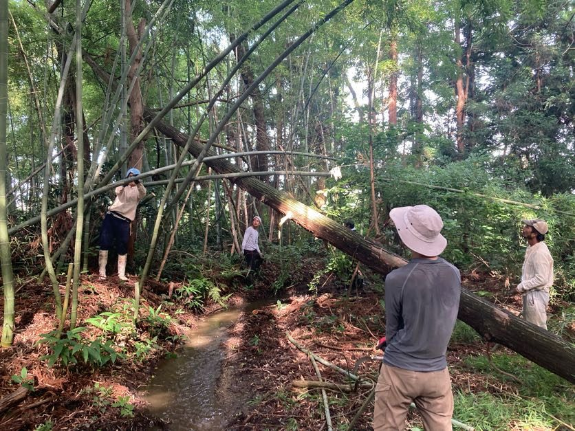
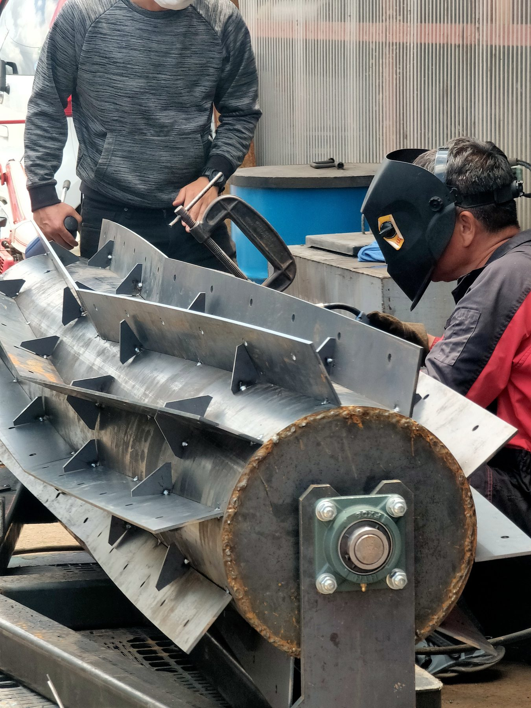

01
育てる
省耕起・省資源型の有機稲作や大豆栽培に取り組み、地域で食べ続けられる生産と備蓄の基盤をつくる。
有機農業からはじまる、 会津・奥会津の村づくりプロジェクト
雪国で共に生きる、新しい豊かさのカタチ。
SHINDOは、福島県・会津／奥会津を拠点に、有機農業、耕作放棄地の再生、古民家の再生、自然環境の整備、学びの場づくりを進めるプロジェクトです。
国内最大のブナ帯の山間地・会津地方を拠点に、食・住・エネルギー・健康・共育──生命の基盤を、自分たちの手で創り直しています。


SHINDO IN 30 SECONDS ／ 30秒でわかるSHINDO
SHINDOは、農業だけを行う団体ではありません。
有機農業を起点に、土地、家、道具、自然、人のつながりを、一つの地域の中で育てています。

省耕起・省資源型の有機稲作や大豆栽培に取り組み、地域で食べ続けられる生産と備蓄の基盤をつくる。

耕作放棄地、水路、森、古民家、農業倉庫を、人が再び使える場所へ戻していく。

中山間地に合う農業機械をつくり、地域でまかなえるエネルギーや新しい暮らしの仕組みを検証する。

援農、学生プログラム、共同生活、対話の場を通じて、子どもも大人も一緒に学び、育ち合う。
MOVIE ／ 映像で見るSHINDO
会津の風景と、立ち上げに関わる人たちの言葉から紹介します。

映像：茂木綾子&佐々木直也 ／ Vimeoで見る →
PROJECTS ／ 活動
やっていること、やったこと、やること。

福島県昭和村・小野川
標高800mの豪雪地で、大型トラクターに頼りきらない稲作に取り組んでいます。
福島県昭和村・小野川
子連れ家族や現場を訪れる人が滞在できるよう、古民家を再生しています。

福島県会津美里町・伊佐須美神社
水源・沢・山と土を整え、伊佐須美神社の社叢の再生を含む活動を進めています。
福島県昭和村・小野川
数年放置されていた田を開墾し、水の循環の最上流にある水源の郷で稲作を再開します。
福島県会津美里町
中山間地に合う、小型・低予算の農業機械を整備し、不耕起栽培に向けた検証を重ねています。

会津・奥会津
地域でまかなえるエネルギーの候補を、安全性・再現性・法的適合性を重視して検証します。
WHY VILLAGE-MAKING? ／ なぜ村づくりへ
食べるもの、住む場所、使うエネルギー、健康を支える習慣、子どもと大人が学ぶ環境。
私たちは、暮らしを支えるものの多くを、いつの間にか遠くの仕組みに委ねるようになりました。
SHINDOが目指しているのは、単に農業を大きくすることではありません。毎年実る土、住み継げる家、生き抜く知恵、そして共に創る仲間を、次の世代に残る「暮らしの基盤」として育てることです。
SHINDOの考え方を読むORGANIZATION ／ 体制
構想を動かす法人、農業の実践基盤、現場と全国の仲間が、それぞれの役割で一つのプロジェクトをつくっています。
暮らしの基盤をつくるプロジェクト
構想、運営、プロジェクト推進を担当
有機農業の実践と生産を担う活動基盤
資金、技術、労働、事業づくりで共創
TRAJECTORY IN NUMBERS ／ 数字で見る歩み
SHINDOの運営母体である株式会社ZEN-BUと、活動基盤である「自然農法 無の会」が共に歩んできた道すじの断片です。
活動基盤「自然農法 無の会」＋ZEN-BU
23ha
自然農法 無の会は、福島県内で最大級の有機稲作面積を担う、創業21年目の有機農場です。
会津での実践開始から現在まで
2021→2025
株式会社ZEN-BU ／ 全国から参加
37組
SHINDOの起ち上げ期、そのビジョンに共鳴し、資金的支援をいただいた仲間との共創が始まっています。
自然農法 無の会＋ZEN-BU ／ 2025年
400名以上
援農、事業づくり、食事づくりなど、それぞれの形で現場を支える人が絶えず訪れています。
PEOPLE ／ 仲間

発起人
構想と事業全体をつくる
全国30件以上の農家を巡り、2021年に会津へ移住。SHINDOの発案者。

起ち上げの仲間
これからの食料生産を探究する
都内企業を辞めて会津へ。農業の現場から、新しい生産のあり方を考える。

運営仲間
都市と農をつなぎ、学びの場をつくる
大学四回生の冬に会津へ。教育と環境整備を担い、都市と農をつなぐ。

活動基盤
有機農業の実践と生産を担う
創業21年、県内最大規模の有機JAS農家。SHINDOの実践知の源。
EXPLORE ／ もっと詳しく
MEMBER & PARTNERSHIP ／ 仲間を募集しています
まず現場を訪れてみる。定期的に通う。村に住んで担う。資金や仕事で支える。
それぞれの暮らしに合った入口があります。
共にSHINDOをつくる仲間を募っています。それぞれの力に支えられて、現場は動いています。
援農や視察を通して、土地、人、活動を知る。
援農・視察について相談する →この村に住み、5〜10年かけて、暮らしと社会を一緒につくる。
今の仕事や生活を続けながら、月1回から隔月程度、会津へ通う。
関わり方を見る →資金、技術、仕事を通して、未来に残る基盤を支える。
詳細を見る →GRAND VISION